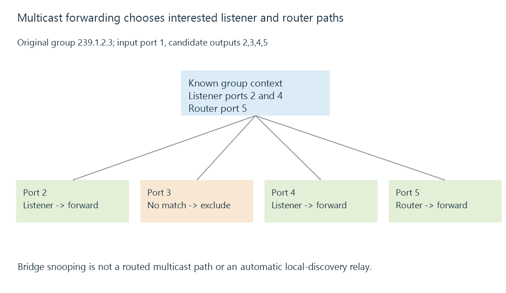

Multicast membership, routing and local scope
Multicast delivery uses receiver membership and forwarding context to copy group traffic onto selected paths, with link-local discovery retaining its own scope rules.
A multicast sender targets a group rather than individually opening one connection to every receiver. The network needs to know which paths have interested listeners.
That forwarding problem has separate link-layer and routed parts.
A bridge can select interested output ports
Use this original reduced snooping model:
{
"group": "239.1.2.3",
"incomingPort": 1,
"candidateEgress": [2, 3, 4, 5],
"listenerPorts": [2, 4],
"multicastRouterPorts": [5],
"expectedEgress": [2, 4, 5]
}
The declared policy sends toward the known listeners and multicast-router port. It excludes candidate port three and the incoming port.

This is a teaching policy with explicit inputs. Real snooping behavior also needs its defined group, query, aging and exceptional/control-message rules.
Snooping does not install a routed multicast path
A bridge observing membership helps decide which ports receive traffic within its bridged realm.
A router connecting realms needs multicast forwarding state and appropriate routing behavior. PIM sparse mode is one cited routing architecture; it is not created merely by enabling a bridge’s snooping option.
The return/member-control messages also need to reach the relevant querier/router. Missing or expired membership information can change forwarding while ordinary unicast still works.
Membership can include source selection
A group label alone need not describe every permitted sender. Source-filtering can ask for particular source/group relationships or exclude sources under its protocol rules.
The IPv4 IGMPv3 and IPv6 MLDv2 references define those membership roles. Current RFC 9776 and RFC 9777 replace the older RFC 3376 and RFC 3810 references.
A receiver’s membership declaration, the bridge’s learned port state and the router’s forwarding state are different observations.
Local discovery has another scope
Routable multicast for an application group does not automatically relay mDNS’s link-local exchange or Emby’s local broadcast discovery.
Their destinations, scope and application semantics differ. A discovery reflector/proxy can provide additional behavior under its own rules.
Similarly, decrementing a packet’s forwarding lifetime can make a routed path unavailable even when group membership exists. The relevant lifetime and scope must permit that hop.
Group visibility is only a candidate relationship
A discovered service address still needs a usable unicast route and application access when the later connection begins.
See Also
- Multicast DNS and local-link naming
- SSDP discovery, advertisements and service locations
- VLANs, tagged links and routed policy
- Firewalls, traffic rules and connection state